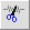
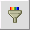

The edit control buttons allow you to alter sound recordings that you see in a wave display window at the center of a sound panel. These buttons are most effective if you first select a portion of the displayed sound wave. To do this, first press the mouse at the starting position in the display window. Then holding the pressed down position, drag your mouse to the ending position. Then release. You should see the portion that you selected highlighted in the wave display window. The edit commands apply to the portion of the sound display that you select.
If you make a mistake you can undo what you did. Refer to the Redo/Undo page for details.| Copy |
Pressing this button copies the selected portion of the sound wave to the ACORNS sound editor clipboard. Refer to the paste command for what comes next. |
| Cut  | Pressing this button deletes the selected portion of the sound wave. However, the deleted portion is transferred to the ACORNS sound editor clipboard. Refer to the paste command for what comes next. |
| Paste | To paste the sound contained in the ACORNS sound editor clipboard, first click the mouse at the postition in a sound wave display window where you want the clipboard sound to insert. This can be in either of the two sound panels that display in the main sound editor application. When you press the paste button, the sound saved in the clipbard will insert into the wave. The display will show the modified wave. Note that after you paste, the clipbard still retains the sound as well. This allows you to perform multiple paste operations with the same sound clip. |
| Delete |
The delete button works just like cut, except that the deleted portion does not go to the Sound Editor clipboard. |
| Duplicate | When you press the duplicate button, the selected portion of the sound wave is inserted immediately after the selection. When you play back, you will hear the sound twice. |
| Trim | The trim button silences everything outside of your selection. This command is useful to eliminate clicks and background noise that playes before and after the recording. |
| Silence | The silence button silences everything inside of your selection. This command can be useful if you hear background static or noise between words. |
| Filter  | The filter button applies one of ACORNS filter algorithms to the audio signal. There is a parameter in the Sound Editor option panel that controls which filtering algorithm is used. |